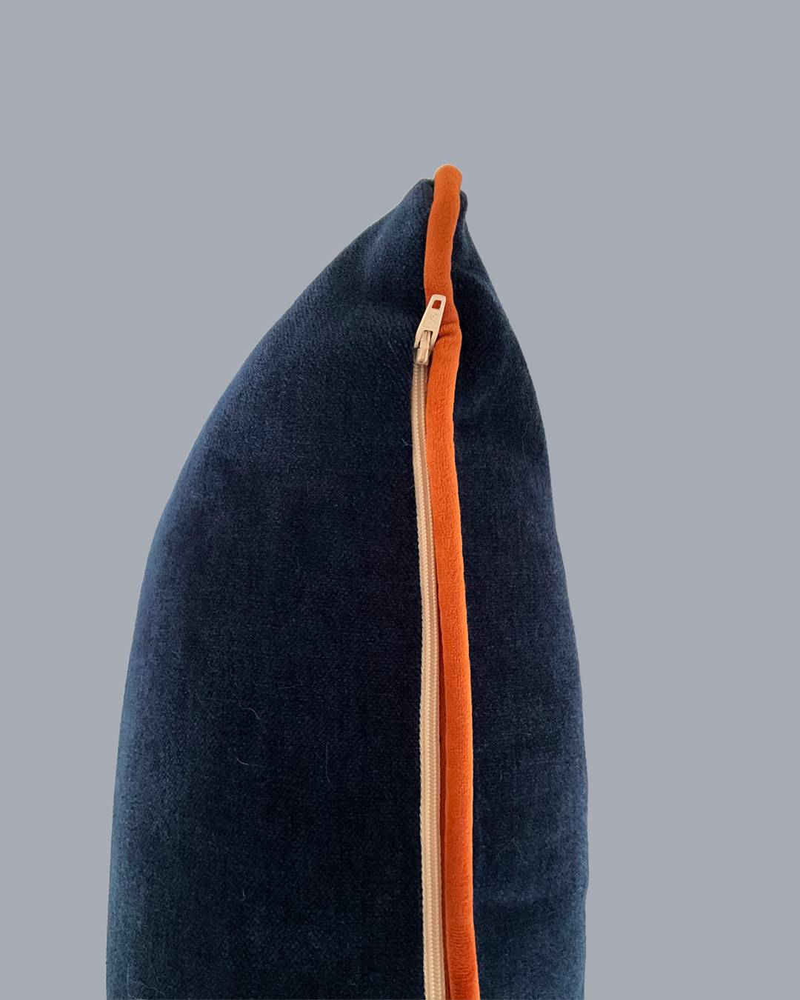

01 / CUSHION COVER
Embroidered Bird
— Navy Blue
£45
An original embroidered bird illustration stitched onto rich navy upholstery fabric. The cushion is finished with contrasting orange piping and a concealed zip.
50 × 30 cm
Cover only · Handmade in London